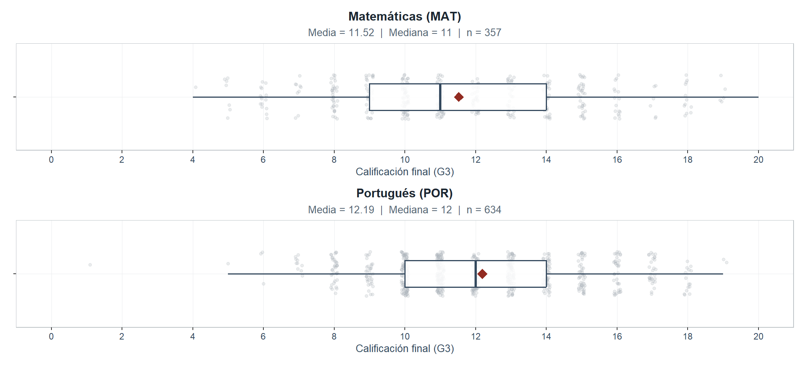
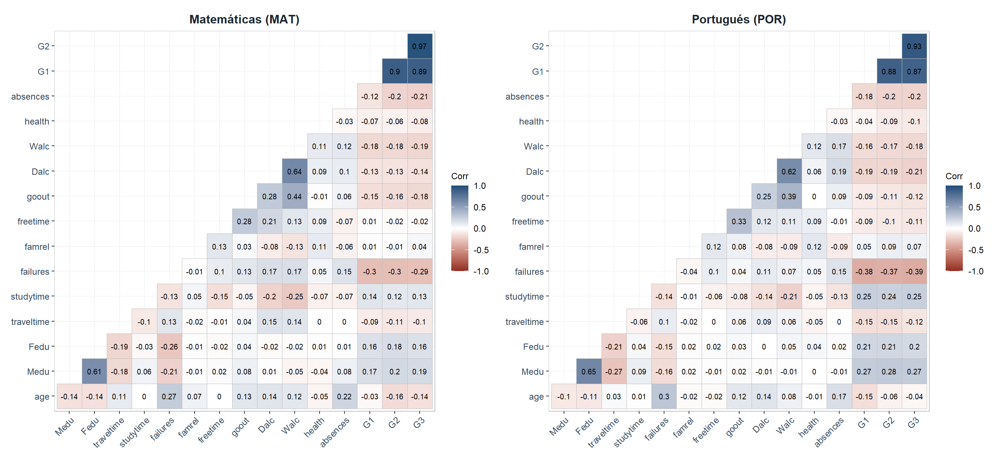
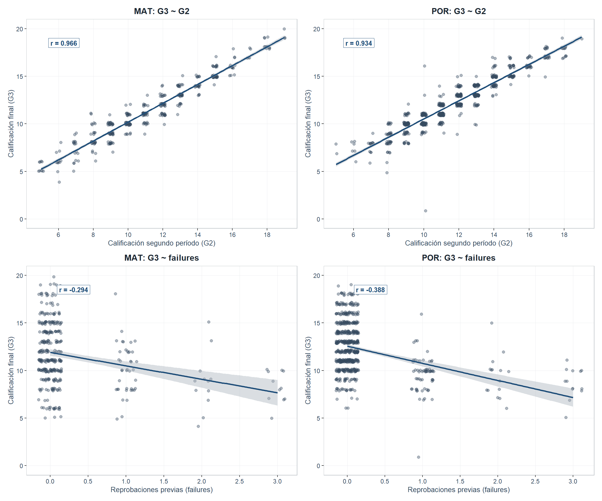

1 Exploración de datos
1.1 Descripción del conjunto de datos
Los datos provienen de Cortez y Silva (2008), recogidos en dos instituciones portuguesas de educación secundaria durante 2005–2006. Cada registro contiene las evaluaciones de los tres períodos (G1, G2, G3) junto con variables demográficas, familiares y de comportamiento escolar. Esta actividad construye un modelo de regresión lineal simple con G3 como respuesta. Cada dataset tiene 33 variables: studentmat (395 registros) y studentpor (649). La Tabla 1.1 las resume.
| N° | Variable | Descripción | Naturaleza | Rango |
|---|---|---|---|---|
| 1 | school | Escuela del estudiante (GP: Gabriel Pereira; MS: Mousinho da Silveira) | Cualitativa nominal binaria | {GP, MS} |
| 2 | sex | Sexo del estudiante (F: femenino; M: masculino) | Cualitativa nominal binaria | {F, M} |
| 3 | age | Edad del estudiante (años) | Cuantitativa discreta | 15–22 años |
| 4 | address | Tipo de domicilio (U: urbano; R: rural) | Cualitativa nominal binaria | {U, R} |
| 5 | famsize | Tamaño del núcleo familiar (LE3: ≤3 miembros; GT3: >3 miembros) | Cualitativa nominal binaria | {LE3, GT3} |
| 6 | Pstatus | Estado de convivencia de los padres (T: juntos; A: separados) | Cualitativa nominal binaria | {T, A} |
| 7 | Medu | Nivel educativo de la madre (0: ninguno → 4: superior) | Cualitativa ordinal | 0, 1, 2, 3, 4 |
| 8 | Fedu | Nivel educativo del padre (0: ninguno → 4: superior) | Cualitativa ordinal | 0, 1, 2, 3, 4 |
| 9 | Mjob | Ocupación de la madre | Cualitativa nominal | 5 categorías |
| 10 | Fjob | Ocupación del padre | Cualitativa nominal | 5 categorías |
| 11 | reason | Razón para elegir la escuela | Cualitativa nominal | 4 categorías |
| 12 | guardian | Tutor del estudiante | Cualitativa nominal | {mother, father, other} |
| 13 | traveltime | Tiempo de desplazamiento al colegio (1: <15 min → 4: >1 hora) | Cualitativa ordinal | 1, 2, 3, 4 |
| 14 | studytime | Tiempo semanal de estudio (1: <2 h → 4: >10 h) | Cualitativa ordinal | 1, 2, 3, 4 |
| 15 | failures | Número de reprobaciones previas (0, 1, 2, ≥3) | Cuantitativa discreta | 0, 1, 2, ≥3 |
| 16 | schoolsup | Apoyo educativo escolar adicional (yes/no) | Cualitativa nominal binaria | {yes, no} |
| 17 | famsup | Apoyo educativo familiar (yes/no) | Cualitativa nominal binaria | {yes, no} |
| 18 | paid | Clases pagadas adicionales en la asignatura (yes/no) | Cualitativa nominal binaria | {yes, no} |
| 19 | activities | Participación en actividades extracurriculares (yes/no) | Cualitativa nominal binaria | {yes, no} |
| 20 | nursery | Asistió a jardín de infantes (yes/no) | Cualitativa nominal binaria | {yes, no} |
| 21 | higher | Desea cursar educación superior (yes/no) | Cualitativa nominal binaria | {yes, no} |
| 22 | internet | Acceso a internet en casa (yes/no) | Cualitativa nominal binaria | {yes, no} |
| 23 | romantic | Tiene relación romántica (yes/no) | Cualitativa nominal binaria | {yes, no} |
| 24 | famrel | Calidad de las relaciones familiares (1: muy mala → 5: excelente) | Cualitativa ordinal | 1, 2, 3, 4, 5 |
| 25 | freetime | Tiempo libre después del colegio (1: muy bajo → 5: muy alto) | Cualitativa ordinal | 1, 2, 3, 4, 5 |
| 26 | goout | Frecuencia de salidas con amigos (1: muy baja → 5: muy alta) | Cualitativa ordinal | 1, 2, 3, 4, 5 |
| 27 | Dalc | Consumo de alcohol en días de semana (1: muy bajo → 5: muy alto) | Cualitativa ordinal | 1, 2, 3, 4, 5 |
| 28 | Walc | Consumo de alcohol en fines de semana (1: muy bajo → 5: muy alto) | Cualitativa ordinal | 1, 2, 3, 4, 5 |
| 29 | health | Estado de salud actual (1: muy malo → 5: muy bueno) | Cualitativa ordinal | 1, 2, 3, 4, 5 |
| 30 | absences | Número de ausencias escolares | Cuantitativa discreta | 0–93 |
| 31 | G1 | Calificación del primer período (0–20) | Cuantitativa discreta | 0–20 |
| 32 | G2 | Calificación del segundo período (0–20) | Cuantitativa discreta | 0–20 |
| 33 | G3 | Calificación final (0–20) — variable respuesta | Cuantitativa discreta | 0–20 |
|
* La variable G3 (resaltada en negrita) constituye la variable respuesta del modelo. Las variables cualitativas ordinales se tratan como numéricas en el análisis de correlación lineal; la limitación de este supuesto se aborda en la Sección 1.5. |
De las 33 variables, 27 son cualitativas —binarias o con escalas ordinales tipo Likert— y 6 son cuantitativas discretas: age, failures, absences, G1, G2, G3. Para el modelo lineal se emplearán únicamente predictores cuantitativos.
1.2 Integridad de los datos
| Indicador | Matemáticas (MAT) | Portugués (POR) |
|---|---|---|
| Observaciones totales | 395 | 649 |
| Variables | 33 | 33 |
| Registros duplicados | 0 | 0 |
| Valores faltantes (NA) | 0 | 0 |
| Observaciones con G3 = 0 | 38 | 15 |
| Porcentaje con G3 = 0 | 9.62% | 2.31% |
La calidad técnica es satisfactoria: no hay duplicados ni faltantes (Tabla 1.2). La única anomalía son 38 registros con G3 = 0 en MAT (9.62%) y 15 en POR (2.31%), cuyo tratamiento se detalla a continuación.
1.3 Tratamiento de observaciones con G3 = 0
| Grupo | n | Media G1 | Media G2 | Media absences | Media failures |
|---|---|---|---|---|---|
| G3 = 0 (MAT) | 38 | 7.53 | 4.66 | 0.00 | 0.92 |
| G3 > 0 (MAT) | 357 | 11.27 | 11.36 | 6.32 | 0.27 |
| G3 = 0 (POR) | 15 | 7.07 | 3.80 | 0.00 | 0.80 |
| G3 > 0 (POR) | 634 | 11.50 | 11.75 | 3.75 | 0.21 |
Los estudiantes con G3 = 0 presentan calificaciones positivas pero reprobatorias en G1 y G2 (MAT: \(\bar{G}_1 = 7.53\), \(\bar{G}_2 = 4.66\); POR: \(\bar{G}_1 = 7.07\), \(\bar{G}_2 = 3.8\)): ni ausencias totales ni aprobaciones previas (la escala portuguesa exige \(\geq 10\)). El patrón decisivo está en absences: en los 53 registros con G3 = 0, ausencias vale 0 en el 100 % de los casos, frente a 21.6 % (MAT) y 36.1 % (POR) entre los G3 > 0. La implicación G3 = 0 \(\Rightarrow\) absences = 0 se cumple determinísticamente (Fisher, \(p = 0.000000000000000000000027\) en MAT, \(0.00000032\) en POR): codificación administrativa de no-presentación al examen final (Cortez y Silva, 2008). La convivencia de dos mecanismos generadores rompería la especificación \(E[Y_i \mid X_i = x] = \beta_0 + \beta_1 x\) (Montgomery y Runger, 2021, Cap. 11); se excluyen estos registros: MAT conserva 357, POR 634.
1.4 Análisis descriptivo de la variable respuesta
| Asignatura | n | Media | Mediana | DE | Mínimo | Q1 | Q3 | Máximo | Asimetría | Curtosis | |
|---|---|---|---|---|---|---|---|---|---|---|---|
| 25%…1 | Matemáticas (MAT) | 357 | 11.524 | 11 | 3.228 | 4 | 9 | 14 | 20 | 0.208 | -0.428 |
| 25%…2 | Portugués (POR) | 634 | 12.188 | 12 | 2.692 | 1 | 10 | 14 | 19 | 0.125 | -0.142 |

Figure 1.1: Distribución de G3 en Matemáticas (izquierda) y Portugués (derecha), comparada mediante diagrama de caja superpuesto a la distribución de frecuencias. El rombo señala la media; la barra central de la caja marca la mediana.
Tabla 1.4 y Figura 1.1: MAT con media 11.52 (DE = 3.23) y asimetría positiva (0.208); POR con media 12.19 (DE = 2.69), más compacta y simétrica. La curtosis negativa en ambos casos indica distribuciones platicúrticas.
1.5 Estadísticos descriptivos de las variables cuantitativas candidatas
| Dataset | Variable | n | Media | Mediana | DE | Mínimo | Q1 | Q3 | Máximo | Asimetría |
|---|---|---|---|---|---|---|---|---|---|---|
| MAT | Dalc | 357 | 1.50 | 1 | 0.92 | 1 | 1 | 2 | 5 | 2.13 |
| POR | Dalc | 634 | 1.49 | 1 | 0.92 | 1 | 1 | 2 | 5 | 2.17 |
| MAT | Fedu | 357 | 2.55 | 3 | 1.08 | 0 | 2 | 3 | 4 | -0.07 |
| POR | Fedu | 634 | 2.32 | 2 | 1.10 | 0 | 1 | 3 | 4 | 0.19 |
| MAT | G1 | 357 | 11.27 | 11 | 3.24 | 3 | 9 | 14 | 19 | 0.16 |
| POR | G1 | 634 | 11.50 | 11 | 2.68 | 0 | 10 | 13 | 19 | 0.03 |
| MAT | G2 | 357 | 11.36 | 11 | 3.15 | 5 | 9 | 14 | 19 | 0.19 |
| POR | G2 | 634 | 11.75 | 12 | 2.63 | 5 | 10 | 13 | 19 | 0.31 |
| MAT | Medu | 357 | 2.80 | 3 | 1.09 | 0 | 2 | 4 | 4 | -0.39 |
| POR | Medu | 634 | 2.52 | 2 | 1.13 | 0 | 2 | 4 | 4 | -0.04 |
| MAT | Walc | 357 | 2.33 | 2 | 1.29 | 1 | 1 | 3 | 5 | 0.55 |
| POR | Walc | 634 | 2.27 | 2 | 1.28 | 1 | 1 | 3 | 5 | 0.64 |
| MAT | absences | 357 | 6.32 | 4 | 8.19 | 0 | 2 | 8 | 75 | 3.58 |
| POR | absences | 634 | 3.75 | 2 | 4.66 | 0 | 0 | 6 | 32 | 1.99 |
| MAT | age | 357 | 16.66 | 17 | 1.27 | 15 | 16 | 18 | 22 | 0.54 |
| POR | age | 634 | 16.72 | 17 | 1.21 | 15 | 16 | 18 | 22 | 0.45 |
| MAT | failures | 357 | 0.27 | 0 | 0.67 | 0 | 0 | 0 | 3 | 2.72 |
| POR | failures | 634 | 0.21 | 0 | 0.58 | 0 | 0 | 0 | 3 | 3.21 |
| MAT | famrel | 357 | 3.96 | 4 | 0.89 | 1 | 4 | 5 | 5 | -0.95 |
| POR | famrel | 634 | 3.93 | 4 | 0.95 | 1 | 4 | 5 | 5 | -1.11 |
| MAT | freetime | 357 | 3.25 | 3 | 1.01 | 1 | 3 | 4 | 5 | -0.16 |
| POR | freetime | 634 | 3.17 | 3 | 1.05 | 1 | 3 | 4 | 5 | -0.19 |
| MAT | goout | 357 | 3.10 | 3 | 1.09 | 1 | 2 | 4 | 5 | 0.14 |
| POR | goout | 634 | 3.19 | 3 | 1.16 | 1 | 2 | 4 | 5 | 0.00 |
| MAT | health | 357 | 3.55 | 4 | 1.40 | 1 | 3 | 5 | 5 | -0.50 |
| POR | health | 634 | 3.53 | 4 | 1.45 | 1 | 2 | 5 | 5 | -0.49 |
| MAT | studytime | 357 | 2.04 | 2 | 0.83 | 1 | 1 | 2 | 4 | 0.62 |
| POR | studytime | 634 | 1.94 | 2 | 0.83 | 1 | 1 | 2 | 4 | 0.68 |
| MAT | traveltime | 357 | 1.43 | 1 | 0.69 | 1 | 1 | 2 | 4 | 1.65 |
| POR | traveltime | 634 | 1.56 | 1 | 0.75 | 1 | 1 | 2 | 4 | 1.27 |
|
* Las escalas ordinales Medu, Fedu, traveltime, studytime, famrel, freetime, goout, Dalc, Walc y health se tratan como numéricas bajo el supuesto de equidistancia entre niveles. |
De la Tabla 1.5 destacan: G1 y G2 concentran mayor dispersión (rango 0–20); failures es fuertemente asimétrica; las ordinales (famrel, freetime, health) se comprimen en niveles altos, limitando su capacidad discriminatoria.
1.6 Análisis de correlación con la variable respuesta
| Variable | r MAT | ρ MAT | r POR | ρ POR |
|---|---|---|---|---|
| G2 | 0.9656 | 0.9617 | 0.9338 | 0.9409 |
| G1 | 0.8918 | 0.8871 | 0.8662 | 0.8788 |
| failures | -0.2938 | -0.2986 | -0.3877 | -0.4308 |
| absences | -0.2131 | -0.2442 | -0.1960 | -0.2141 |
| Medu | 0.1903 | 0.1918 | 0.2720 | 0.2886 |
| Walc | -0.1901 | -0.1874 | -0.1850 | -0.1660 |
| goout | -0.1774 | -0.1883 | -0.1197 | -0.1143 |
| Fedu | 0.1588 | 0.1640 | 0.1975 | 0.2205 |
| Dalc | -0.1407 | -0.1529 | -0.2110 | -0.2036 |
| age | -0.1404 | -0.1482 | -0.0380 | -0.0304 |
| studytime | 0.1267 | 0.1099 | 0.2460 | 0.2636 |
| traveltime | -0.0998 | -0.1029 | -0.1229 | -0.1364 |
| health | -0.0817 | -0.0559 | -0.1017 | -0.1031 |
| famrel | 0.0377 | 0.0499 | 0.0714 | 0.0549 |
| freetime | -0.0216 | -0.0280 | -0.1150 | -0.1230 |
|
* En negrita: predictores seleccionados para modelación (G2 y G1). En itálica: mejor predictor no-calificación (failures). |

Figure 1.2: Matriz de correlaciones de Pearson entre las variables cuantitativas y G3, para Matemáticas (izquierda) y Portugués (derecha). La escala monocromática va de gris claro (correlación negativa) a azul marino (correlación positiva).
Tabla 1.6 y Figura 1.2: G2 presenta la máxima correlación con G3 en ambos datasets (\(r = 0.9656\) en MAT; \(0.9338\) en POR), seguida de G1 (\(r = 0.8918\) y \(0.8662\)). La concordancia entre Pearson y Spearman ofrece robustez ante outliers y relaciones monótonas no estrictamente lineales —no ante no-normalidad, supuesto que solo afecta la inferencia sobre \(\rho\) y no el cálculo de \(r\) (Faraway, 2014, §3.7)—. El mejor predictor no-calificación es failures (\(r = -0.2938\) en MAT; \(-0.3877\) en POR); en POR se suman studytime (\(r = 0.246\)) y Medu (\(r = 0.272\)). El resto presenta correlaciones débiles (\(|r| < 0.22\) en MAT; \(|r| < 0.27\) en POR).
1.7 Selección de la variable predictora

Figure 1.3: Diagramas de dispersión de G3 frente a los dos predictores seleccionados, G2 (fila superior) y failures (fila inferior), en Matemáticas (columna izquierda) y Portugués (columna derecha). Línea azul marino: ajuste por mínimos cuadrados; banda gris: intervalo de confianza al 95% para la media condicional.
La Figura 1.3 confirma la linealidad nítida de G2 → G3 en ambas asignaturas (puntos agrupados, banda estrecha); failures → G3 es lineal y negativa con mayor dispersión. Se adopta como predictor principal a G2 (máxima correlación, relación lineal nítida) y como alternativo en la app interactiva a failures (mejor predictor no-calificación, interpretable para intervenciones educativas). La alta correlación \(r \approx 0.93\)–\(0.97\) refleja la continuidad entre períodos de una misma asignatura: el \(R^2\) será alto, pero Cortez y Silva (2008) advierten que la superioridad predictiva pierde utilidad cuando G2 no está disponible con anticipación —tensión ajuste vs. utilidad retomada en §6.1—.